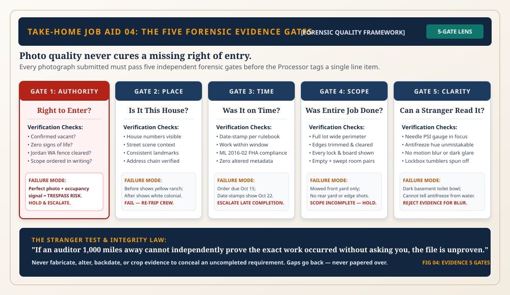

13 The Work Itself
At the end of the chain, preservation is tangible craft. Every lock changed, lawn mowed, and pipe tested protects American housing stock.

Done Is a Claim; Proof Is the Test
Sweat and labor in the freezing rain count for nothing without undeniable photographic documentation proving compliance.
The Integrity Standard
A discovered gap goes back to the field; it is never covered with doctored dates, recycled photos, or fabricated pressure dials.
The Completed Custodial Mission
Protecting the 1972 house keeps neighbourhood values secure until a new family turns the brass key in the front door.
Operational Depth: Work Order Docket, Rules & Protocols ▼ Click to Toggle Depth Details
FINAL CUSTODIAL SUMMARY & TURNOVER PREPARATION: Review complete property restoration binder for 1972 composite residence. Confirm grass maintained under municipal code, all secondary openings secured, winterization holding 35 PSI integrity, health debris cleared, and all photos certified through Place, Time, Scope, and Clarity lenses. Prepare file for REO asset manager marketing handoff.
Governing Rules & Compliance Standards
The Four Photo Tests Mandate
Every evidentiary image must independently pass: Place (house number in frame), Time (valid order window), Scope (entire work area shown), and Clarity (sharp, legible dials).
The Anti-Fabrication Oath
Photo manipulation, staging, date-stamp editing, or cross-property borrowing constitutes immediate ethical termination and referral to industry exclusion registers.
The Custodial Mission Closure
The physical property must be left in safe, sanitary, and secured condition, prepared for neighborhood stabilization and family re-occupancy.
Operational Requirements & Dealing Protocols
Turnover Certification Docket
Collate full photo timeline into a single verified PDF dossier with client verification cover sheet.
Brass Key Handover Package
Tag master lockbox keys and deposit in dual-custody safe for asset marketing agent retrieval.
Dealing Point — Passing the Torch
When real estate agents or buyers visit the property, provide clean documentation proving the property was ethically and professionally stewarded throughout its vacant transition.